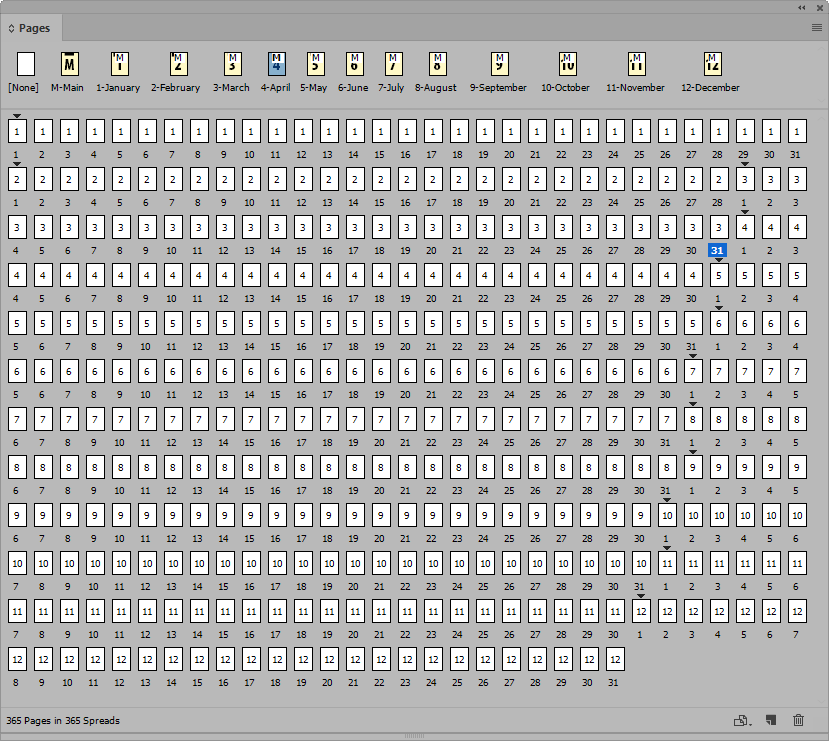
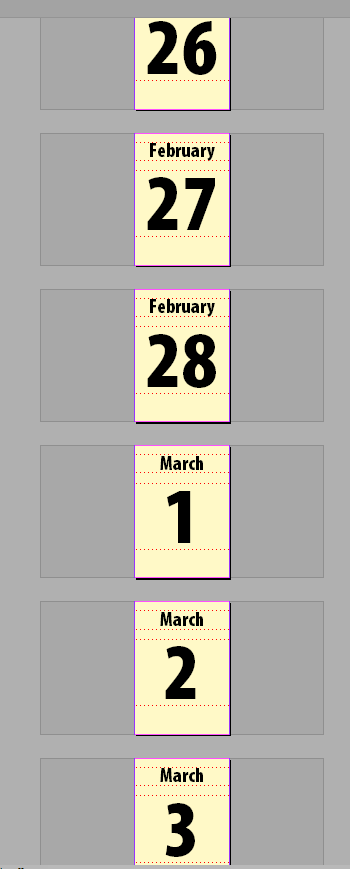

How can I create a month and have the dates auto-change on each page?
Task:
Say, I have a section "January" and another "February" etc for the 12 months. I have one day per page with a month as a section. Then another month as a section and one day per page etc. I want to auto change the date on each page. I already have page numbers....
Solution:
- Create a new section and new set of page numbers for each month. (right click in page panel >> number and section options)
- Create a master page for each month.
- On that master page, create a box with the month's name follow by the current page number (Type>Insert Special Character>Marker>Current Page Number)
- Apply appropriate master pages.


Thanks for the tip to Texsain. The source is here.
Click here to download the sample document (InDesign CC 2018, 800 KB)